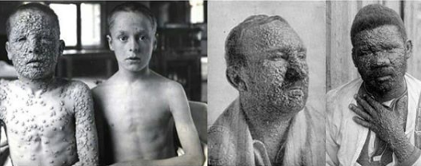
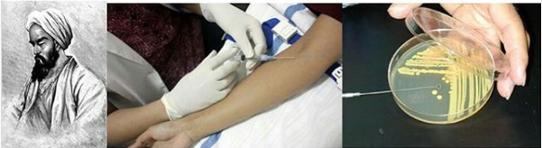

Menyoal Dalang di Balik Konspirasi Vaksin
Metode vaksin (pengobatan preventif) selama ini dapat dikatakan menjadi salah satu leading program kesehatan dunia. Sayangnya, vaksin justru menjadi polemik yang semakin tidak karuan dan tidak berdasar ketika ada sebagian pihak yang mengaitkannya dengan proses dehumanisasi umat Islam alias ‘genosida terselubung’.
Mereka beralasan bahwa terdapat maksud tersembunyi di balik perkembangan vaksin yang disinyalir kuat didanai oleh para kapitalis global yang ‘berselingkuh’ dengan WHO (badan kesehatan dunia). Salah satu penyebabnya adalah Barat tidak menghendaki perkembangan jumlah umat Islam dunia yang signifikan.
Sentimen keagaaman yang dibuat-buat itu dapat dikatakan cukup sukses ‘mempengaruhi’ sebagian kaum muslim. Sebelum kita mengadili hal tersebut, ada baiknya kita mendalami sejarah perkembangan metode vaksin di dunia.
Sejarah perkembangan vaksin memang tak dapat dilepaskan dari perkembangan imunologi. Sejarah keduanya saling berkaitan, bagaikan dua sisi mata uang. Periode ini diawali ketika mewabahnya penyakit Smallpox (cacar). Menurut CDC (2016) (Centers for Disease Control and Prevention – Pusat Pengendalian dan Pencegahan Penyakit) dalam artikelnya “History of Smallpox”, asal-usul dari penyakit ini tidak dapat diketahui secara pasti.
Cacar diperkirakan berasal dari kekaisaran Mesir sekitar abad ke-3 SM, hal ini didasarkan pada keberadaan ruam (peradangan dan perubahan warna pada kulit) menyerupai cacar pada tiga mumi di sana. Sumber lain menyebutkan secara tertulis penyakit yang serupa dengan cacar muncul di Tiongkok pada abad ke-4 Masehi, kemudian di India pada abad ke-7, dan Asia Kecil pada abad ke-10.
Menurut CDC (2016), pada abad ke-6 penyebarannya meningkat di Tiongkok dan Korea yang kemudian tersebar hingga Jepang; Abad ke-7 penyakit cacar ini mulai menyebar akibat ekspansi Arab (masa Kekhalifahan) ke Afrika, Spanyol, dan Portugal; Abad ke-11 penyebaran penyakit ini dibawa oleh para kesatria Perang Salib; Abad ke-15, Portugis ‘membawa’ penyakit ini ke Afrika Barat; Abad ke-16, Kolonialisasi Eropa dan para budak Afrika menyebarkannya ke Kepulauan Karibia dan Selatan Amerika; Abad ke-17 masih oleh Kolonialisasi Eropa membawa penyakit ini ke daratan utara Amerika, dan pada Abad ke-18, ekspansi Inggris di dunia membawa penyakit ini ke daratan Australia.
Penyakit ini akhirnya mewabah di dunia dan membentuk sebuah sejarah baru bagi manusia. Cacar telah menjadi endemic, isu internasional, sekaligus menjadi ‘momok’ yang menakutkan kala itu. Sangat menular, dengan cara yang sangat mudah. Penularan lewat cairan cacar menyebabkannya cepat menginfeksi orang-orang yang dekat dan memiliki kontak dengan orang yang terinfeksi.
Bila membaca sejarah perkembangan vaksin, secara umum kita akan dikenalkan dengan sosok Edward Jenner (1749-1823), seorang ahli bedah angkatan darat Inggris yang sebagian karirnya dihabiskan sebagai dokter sekaligus apoteker di negaranya. Proses vaksinasi dikemukakan olehnya, yang kemudian penelitian ini diadopsi oleh Louis Pasteur untuk imunisasi.
Hong (2014) dalam artikelnya, “An Historical Examnination of Smallpox Vaccinations : Past and Present Immunization Challenges” menturkan bahwa penelitian yang paling menonjol telah dilakukan oleh Rhazes (Abu Bakar Muhammad Bin Zakariya, Ar-Razi, 865-925M) yang pertama kali memberikan deskripsi medis terkait penyakit smallpox (cacar) ini. Beliau mengatakan bahwa penyakit ini menular dari orang ke orang dan menurutnya orang yang selamat dari cacar tidak mengalami penyakit yang sama untuk kedua kalinya. Sebuah penemuan yang bahkan berlaku hingga hari ini. Karyanya kemudian diterjemahkan ke bahasa Latin dan Yunani, hingga menginspirasi para dokter Eropa pada masa Renaisans. Menurut Moore J (1815) dalam bukunya “The History of The Smallpox”, Ar-Razi adalah peletak dasar teori acquired immunity (imunitas bawaan).
Teori Ar-Razi itu kemudian mulai dikembangkan oleh para Ilmuwan islam. Proses yang dilakukan oleh ilmuwan kekhalifahan masih berbentuk metode inokulasi (memindahkan bakteri dari medium yang lama ke medium yang baru), yang prosesnya mengacu pada infeksi virus cacar pada subkutan (jalur masuk obat suntik yang terletak di bagian bawah kulit) diambil dan diberikan ke individu lain. Namun, seperti yang sudah ditemukan oleh Ar-Razi terkait peletak dasar teori acquired immunity, inokulasi memang memiliki resiko. Ada kekhawatiran bahwa penerima dapat mengembangkan cacar yang sudah ada. Metode inokulasi ini kemudian disebut dengan metode variolasi.
Pada abad ke-18 pula dengan datangnya para wisatawan dari Istanbul (Pusat Kekhalifahan), metode variolasi pertam kali mulai dipopulerkan. Tahun 1714, Royal Society of London (perkumpulan ilmuan tertua di daratan Eropa) menerima sepuncuk surat Emanuel Timoni yang menggambarkan Teknik variolasi yang ia saksikan di Istanbul. Surat serupa dikirim oleh Giacomo Pylarini pada tahun 1716. Namun, laporan terkait praktik inokulasi subkutan sama sekali tidak mengubah cara pandang dokter Inggris konservatif saat itu. Teknik Variolasi tersebut kemudian baru dilakukan di daratan Eropa awal abad ke-18. Hal ini terungkap dalam sebuah surat tulisan seorang bangsawan sekaligus istri Duta Besar Inggris untuk Port Sublime yang bernama Lady Mary Wortley Montagu (1689-1762). Sekembalinya dari Istanbul, Lady Mary memberikan saran kepada dokter ahli bedah, Charles Maitland untuk melakukan teknik inokulasi kepada anaknya yang berumur 5 tahun.
Setelah Lady Mary menggunakan teknik tersebut, praktik ini akhirnya menyebar ke beberapa anggota kerajaan. Charles Maitland (ahli bedah Skotlandia) kemudian diberi lisensi oleh kerajaan untuk melakukan praktik ini terhadap enam tahanan di Newgate (Inggris) pada tanggal 9 Agustus 1721. Beberapa dokter pengadilan anggota Royal Society dan Anggota College of Physicians mengamati proses tersebut. Setelah melakukan praktik yang sama, semua tahanan terbukti kebal.
Pada bulan-bulan berikutnya, hal yang sama dilakukan kepada anak yatim-piatu. Hasilnya sukses besar. Akhirnya pada tangga 17 April 1722, Maitland berhasil merawat dua putri Wales. Tidak mengherankan jika prosedur ini diterima secara umum dan sukses. Metode ini mulai diperkenalkan ke Amerika oleh dokter Inggris William Douglas M.D (1691-1752) yang mencoba metode inokulasitersebut secara pribadi di Inggris dan Amerika (diungkap dalam Buku yang berjudul “Edward Jenner and The Discovery of vaccination” yang terdapat di Perpustakaan Thomas Cooper, University of South Caroline). Barulah setelah itu, metode ini dipelajari lebih lanjut oleh Edward Jenner M.D.,LL.D.,F.R.S. Jenner tertarik dengan hubungan antara penyakit cacar, cacar air, dan swinepox.
Pada tahun 1789 Jenner bereksperimen dengan menginokulasikan terhadap anaknya sendiri, kemudian pada usia satu setengah tahun kembali diinokulasikan dengan cacar air, yang selanjutnya kembali diinokulasikan dengan inokulasi cacar air konvensional. Penyelidikan Jenner tersebut bertujuan untuk mengamati kekebalan yang diberikan oleh cacar air, dan bagaimana secara artifisial hal itu dapat dilakukan. Setelah itu, Jenner melakukan inokulasi kembali kepada pasienya dengan virus cacar hidup untuk melihat apakah cacar air tersebut bekerja. Pada 14 Mei 1796, penelitian tersebut berhasil. Anak pertama yang akhirnya terbukti sehat pada beberapa pengujian Jenner adalah James Phipps. Hal inilah yang menjadikan Jenner disebut oleh ‘beberapa kalangan’ sebagai orang yang pertama kali menemukan metode vaksinasi.
Melihat sejarah singkat tersebut, kiranya kita telah mendapati alur yang cukup jelas. Ternyata, apa yang selama ini telah disampaikan, bahwa Edward Jenner adalah penemu metode vaksin pertama mirip dengan apa yang pertama kali dikenalkan oleh Para Ilmuwan Islam dengan metode inokulasi nya. Namun, inilah realitas hari ini. Nama Jenner lebih popular di telinga kita dibandingkan dengan para Ilmuwan Islam, terkhusus Ar-Razi yang oleh para ilmuan Barat disebut sebagai penemu pertama teori acquired immunity yang mana keilmuan imunologi pun muncul dari sana.
Hal ini tentu cukup mengherankan. Bagaimana bias, penemuan besar dunia ini (vaksin) ternyata dilakukan oleh seorang Muslim. Namun, hal ini adalah sesuatu yang wajar dan sangat mungkin. Sejak awal, Islam tidak pernah memisahkan antara ilmu pengetahuan dengan ilmu agama. Keduanya senantiasa diberikan dorongan untuk berkembang. Inilah yang kemudian menjadikan Islam sebagai center of knowledge duni. Maka, teruntuk para kaum muslimin yang masih berpikiran bahwa di balik terdapat sebuah konspirasi besar, sangat disarankan untuk lebih bersikap objektif dan kritis. Apabila fakta hari ini justru menunjukkan ketidakcocokan, lebih baik diluruskan dan diberi masukan yang konstruktif, bukan justru menegasikan metode vaksin yang sudah dibangun oleh para Ilmuwan Islam.